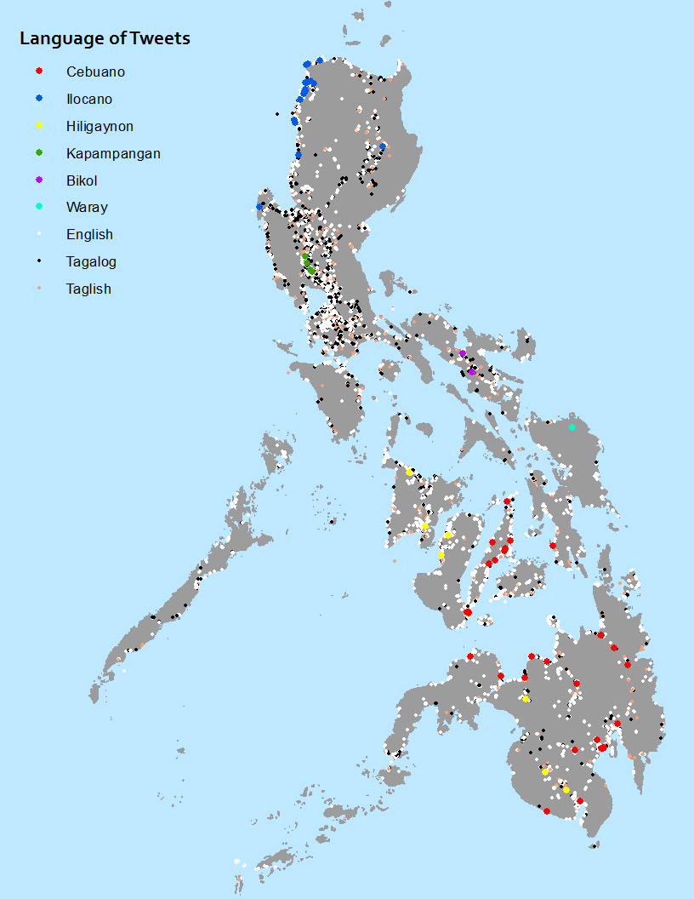
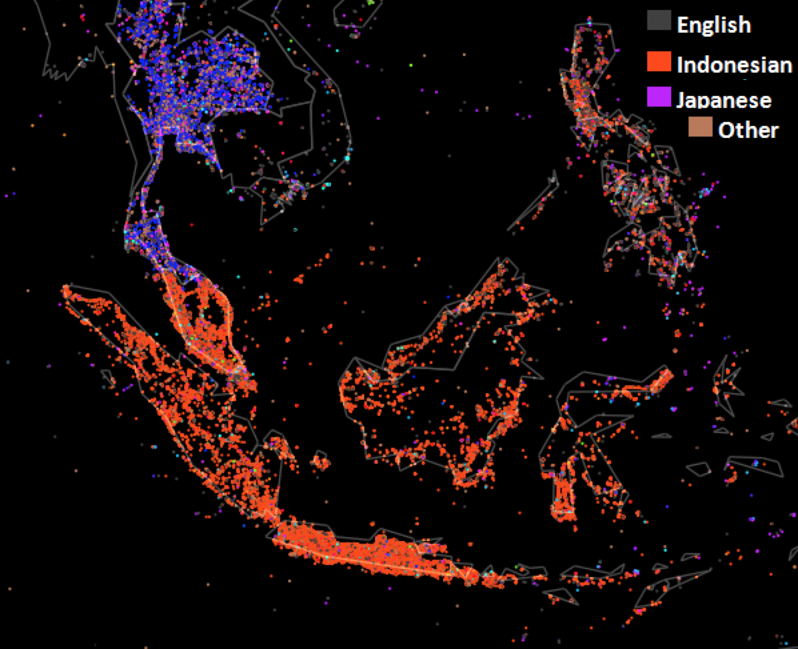
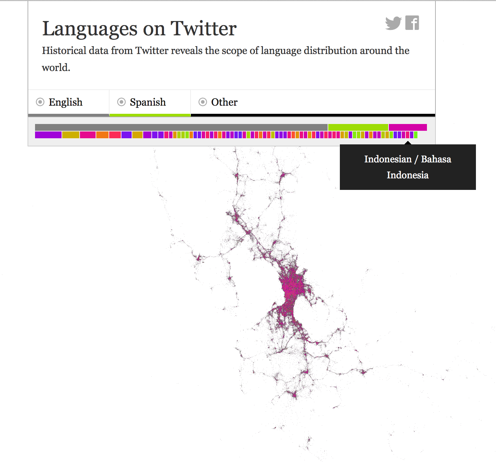
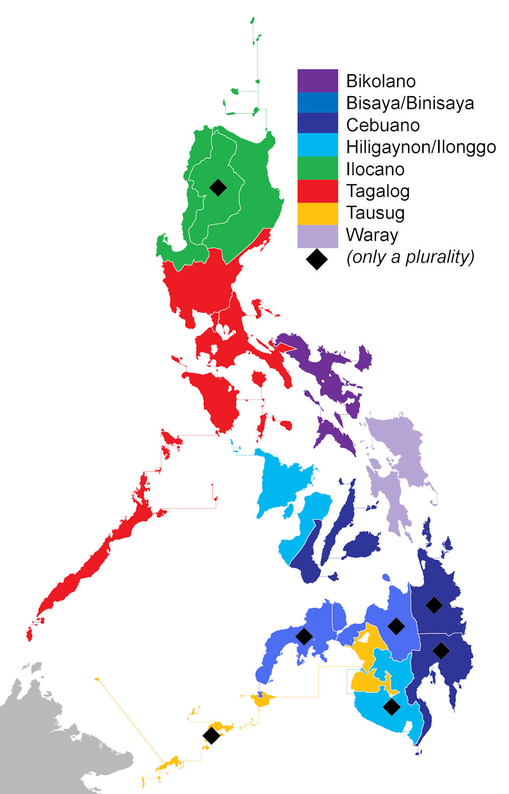
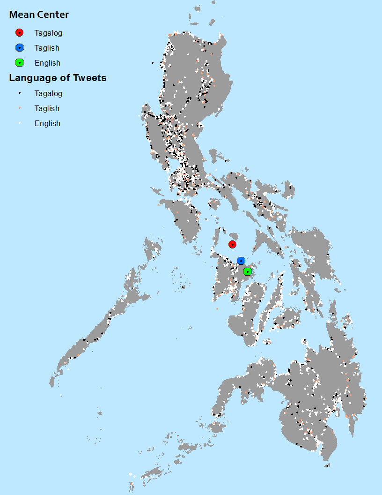
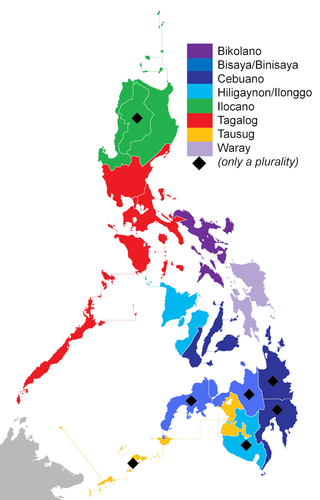
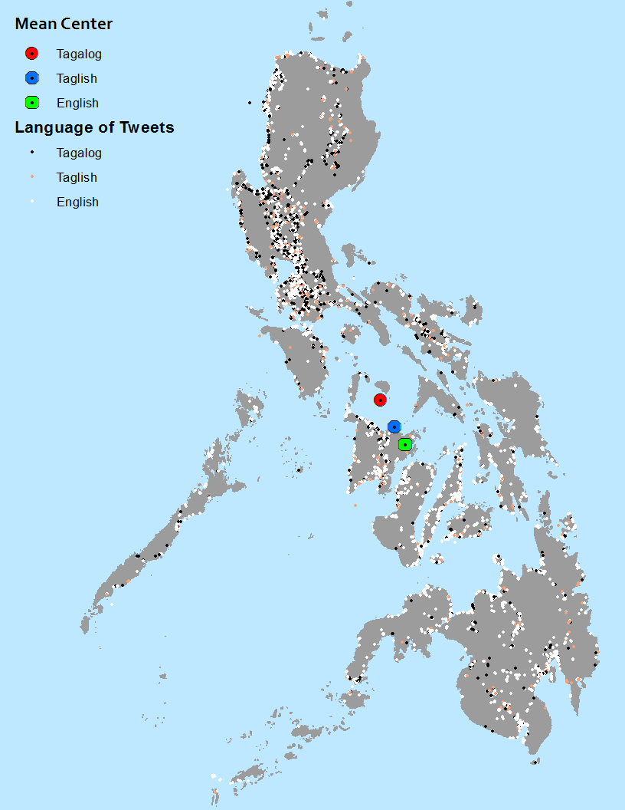

Minority Languages on Twitter
Language Maps
I love language maps, and looking at how languages interact with space. Much of the history of human movement through space can be re-constructed using linguistics and language maps. For example, linguistic data shows that the Malagasy of Madagascar have their origins in Borneo, Indonesia. Or that people as far flung as the Irish, Persians, Spanish, Armenians, Germans and Punjabis all speak related languages, and they all have cultural and ancestral roots in one group of people that once lived somewhere near the Black Sea.However, even with a good understanding of where a language or group of languages are, they can be very difficult to depict on a map. Languages frequently overlap, or exist as linguistic continua that cannot be categorized into distinct languages. Language cartographers will often follow political boundaries, usually incorrectly. This map, for example, makes it appear that the use of English abruptly ends and Spanish begins at the US-Mexican border. It also looks like you are as likely to find French speakers in the far north of Quebec as you are in Montreal.
Another major issue with language maps is that they usually rely on perceptual data, but not on real observations of languages "in the wild". We all know that there is a boundary between Southern American English and Northern American English, but where exactly would you put the line? At the mason-dixon line? Well, no one really has a southern accent in DC or Baltimore, so what about somewhere across Virginia? It's tricky. The best solution, which linguistic geographers have been doing for years, involves large-scale surveys, asking people what they "would" say, recording where exactly they are, and then aggregating this data. This has led to some cool maps, like these ones, but is incredibly time- and labor-intensive.
I believe that recently a new solution has emerged to these problems in mapping languages and dialects. In the past few years, geotagged social media have become widely available, offering massive and readily available data sets for mapping everything from linguistic trends to sports fan domains to preferences for church vs beer. Maps made from such large, geotagged, linguistic corpora show real occurrences of linguistic phenomena, rather than just perceptual linguistic boundaries. Additionally, because such data is available in point form, it makes it much easier to display overlapping languages and linguistic continua. So, I decided to take a crack a this, and mapped the languages of the Philippines using tweet data:

{kind=link}
Methods
Collecting Tweets
To collect the tweets, I used the R package twitteR, a wrapper for the twitter API. I divided the Philippines into 1036 evenly-spaced points, and searched for all tweets within a 10 mile radius of the point, covering the whole area of the Philippines. I ran this every night for 5 days until I had one million tweets, of which about 25% were georeferenced.Collecting Corpora
In order to identify the language of the tweets, I needed corpora. A linguistic corpus (singular of corpora) is a large body of text in a given language. This large body of text is used to generate data, usually statistical signatures, that can be used to determine if a given sample text (like a tweet) has the same features as the corpora. So, in order to tell if a tweet is in, say, Hiligaynon, you need a lot of samples of Hiligaynon. To build these corpora, I got samples of literary and religious texts in Tagalog, Bikol, Ilokano, Hiligaynon, Pangasinense, Kapampangan, Cebuano and Waray from SEAlang. However, people speak quite differently in a religious or literary setting than they do while tweeting informally, so to get more "modern" samples of each language, I also built corpora by web scraping from Wikipedia using Python's BeautifulSoup package. I made a script that collects the body text from random Wikipedia articles (using the "Random Article" link), and I also made a script that starts at the page for the Philppines and collects text from every page that it links to, and then every page that those ones link to, etc. I used both scripts until I generated a corpora of 300,000 words for every one of the aforementioned languages except Hiligaynon, as well as for Chavacano de Zamboanga, which SEAlang did not have a corpus for. Hiligaynon has a beta-wiki with a couple hundered pages, and I used every single one of them to create a considerably smaller corpus.Identifying Languages
Most language identification algorithms work by taking 3 and 4 letter samples of the corpus (called 3-grams and 4-grams, or just n-grams) and determining their distribution of the frequency of their occurrences. This is done for multiple languages and corpora. These n-grams are also sampled from the text to be identified, and the distribution of n-grams from the sample text is compared to the distribution of n-grams in the various corpora. Whichever corpora's distribution of n-grams most closely matches that of the n-grams of the sample text is determined to be the language of the sample text.However, this method fails miserably for Austronesian languages, and exclusive word lists must be used. This is because Austronesian languages have relatively small phonemic inventories (Hawaiian only has eight consonants!) and almost all have a simple, Consonant-Vowel syllable structure. Thus there is not enough variability in possible n-grams, and languages cannot be classified based on n-gram distributions. Google translate uses the n-gram method, and when I use it for Tagalog, it frequently thinks that the text I am entering is in Indonesian or Cebuano. A more relevant example of this is in other attempts to map work languages. Two high-res language maps of twitter exist here and here. Outside of the Philippines, they are fantastic (just look at Europe), but I am assuming that they use the n-gram method, because they both mis-identify Tagalog (and other Filipino languages) as Indonesian:
 
{kind=link}
{kind=link}
Analysis
Comparison to Other Maps

So here is my final map placed next to a map of the languages of the Philippines from Wikipedia. The map from Wikipedia does a good job of quickly showing where one might find minority languages, but it does a bad job of showing location precisely, specifically with regard to density. It also does a pretty bad job of showing where languages overlap. It is clear in the tweet map, for example, that while the minority languages are confined to certain regions, English and Tagalog are prevalent throughout the country. This is unclear in Wikipedia's map, which makes it appear as if Tagalog is just one of many minority languages, when in fact it is far more prevalent. The tweet map also does a much better job of displaying language density. Ilocano, for example, is most common on the northeast coast of Luzon, is much less common in north-central Luzon (because of the many small languages spoken in the mountains) and is also uncommon on the northwest coast of Luzon (because the whole area is sparsely populated). This is clear in the tweet map, where most of the Ilocano tweets are on the northeast coast and only scattered tweets appear on other regions, whereas the Wikipedia maps makes the Ilocano area appear uniform. The Wikipedia map does add the diamond indicating that a language is only a plurality - but it does not indicate which other languages are present or where a given language is concentrated, like the dot map does.
English vs Tagalog

Clearly, English is widely used throughout the Philippines, as is Tagalog. However, it appears that that Tagalog and Taglish (code-switching between English and Tagalog in one tweet) are more common in the North, the homeland of the Tagalog language. I was told by many Filipinos that southerners, who speak mostly Cebuano, resent the fact that Tagalog became the national language, since Cebuano was spoken by more people over a wider area. For this reason, Cebuanos use less Tagalog and more English. This map seems to confirm that, and taking the median point for Tagalog, English and Taglish shows a trend of Tagalog being more common in the north and English being more common in the south. Nevertheless, English was much more common than Tagalog, with 80,000 English tweets, 28,000 Tagalog tweets and 16,000 tweets with at least 3 words in Tagalog and 3 words in English.
Minority Langauges

Here is a map of the minority language tweets. As I discuss later, there were issues with language identification for these minority tweets, so their relative totals are probably not indicative of how prevalent they actually are on twitter, much less in everyday, spoken usage. Nevertheless, I think this map does a great job of displaying their geographic distributions. Hiligaynon (also called Ilonggo) is accurately shown as occurring on both Panay Island and Negros in the central islands (called the Visayas), as well as in the east of the southern island of Mindanao. Cebuano was also accurately identified across its full range, despite the fact that is has many different varieties, indicating that the corpus drew on a good variety of texts. This was not true for Bikol, which also has many varieties. Because the corpus from Wikipedia was based on Central Bikol, also called Naga Bikol, both of the Bikol tweets identified were found near Naga, and not in the larger city of Albay, which speaks a slightly different variety.
Many of the minority languages were very under-represented on twitter, with only one tweet coming in from Waray, two from Bikol, and nine from Kapampangan. In addition, no tweets were found in Pangasinse, spoken between Kapampangan and Ilocano, or Chavacano de Zamboanga, a creole based on Spanish and local languages, spoken in Mindanao.
Issues with Language Identification
One major issue with this study was that the corpora and and tweets were written in quite different registers. Filipinos use different words when they are writing tweets than when they are writing the bible. And even when they are using the same words, they spell those words differently. This is especially true for minority languages, which are almost entirely spoken and rarely used in a formal literary setting. English, on the other hand, is the main language used at school, business and in other settings that involve a lot of writing. Thus, Filipinos are much more likely to use "proper" English than they are "proper" Tagalog when writing tweets, and they would almost never never use the "proper" spelling and vocabulary of their minority languages. However, my corpora were based on the "proper" versions of these languages, and thus minority languages are quite underrepresented, and my study does not represent an accurate measure of, say, Waray usage versus English usage. Only about 125,000 of tweets 250,000 geotagged tweets could be classified, and I believe that most this missing half represent tweets written in "improper" Tagalog and minority languages (as well as a couple tweets in completely different languages, like Chinese or German).
For example, to say "I have not yet been to that new SM" would be, in proper Tagalog, "Hindi pa ako nakapunta sa yung bagong SM". However, a Filipino using social media would likely write something like "Di p aq nkpunta sa yn bago SM". This manner of writing has been taken to an almost incomprehensible level in the cultural phenomenon of jejemon, (similar to leetspeak in English) and cannot be identified as Tagalog from a corpus in "proper" Tagalog. Slang is also quite common in spoken Tagalog and in spoken minority languages, and is impossible to identify from a "proper" corpus. In fact, there are whole dialects of Tagalog based on slang, such as this code language used by gays. One Bikol word I learned when I was living the the Philippines was "uragon", which means strong or manly. However, this word was not in the Bikol corpus I generated: nowhere in the Bible, in literary texts or on the Bikol Wikipedia is it used.
Finally, the end result of the language classification required a great deal of cleaning and spot checking. This was because many of the minority languages' corpora contained words that were also in English slang, so many English tweets were misidentified as minority language tweets. For example "haha" is a word in Waray (or at least, is a word used in the Waray bible, Waray literary works, or the Waray Wikipedia) and "omg" is a word in Kapampangan. Since I decided that three matching words makes a tweet fall into a given language category, the following tweets were classified as Kapampangan and Waray:
"OMG ILOVEYOU OMG OMG OMG OMG ILOVEYOU DJ HUHUHU ILOVEYOU WAHHH"
"ge tawa tayo :( haha haha haha""
I had to do a lot of spot checking and re-running the classification before I ended up with results that I was satisfied with.
Further Projects
I think there are a number of ways I could do this project better, if I ever wanted to use this for an academic conference or paper. A larger twitter data set could help capture more tweets from the more obscure minority languages. However, better language classification techniques could definitely make major improvements. I think the best way would be to build corpora from tweets themselves. To get this, I'd have to find native speakers from each minority language, give them a data set of a couple thousand tweets, and have them identify the ones that are in the minority languages they know. Then, these training tweets would be used to classify, say 1 million tweets. Another possibility would be to run an "unsupervised" classification. With this method, there are no training data set or corpora, but rather all of the tweets would be sorted into natural groups based on certain statistical features. I have done this before with pixels in remotely sensed satellite imagery, but I am not exactly sure how to go about this for text data, or if it has ever been done before.
I would also like to use this method that I have just developed in other places outside of the Philippines. I think Indonesia and Malaysia would be good candidates, as they are other areas with high twitter penetration, many minority languages, and Austronesian languages that cannot be classified with the n-gram method. Another possibility would be to map the languages of tweets in various international cities with a lot of linguistic diversity, like Singapore, London, New York and Hong Kong.
Comparison to Other Maps
{kind=link}
So here is my final map placed next to a map of the languages of the Philippines from Wikipedia. The map from Wikipedia does a good job of quickly showing where one might find minority languages, but it does a bad job of showing location precisely, specifically with regard to density. It also does a pretty bad job of showing where languages overlap. It is clear in the tweet map, for example, that while the minority languages are confined to certain regions, English and Tagalog are prevalent throughout the country. This is unclear in Wikipedia's map, which makes it appear as if Tagalog is just one of many minority languages, when in fact it is far more prevalent. The tweet map also does a much better job of displaying language density. Ilocano, for example, is most common on the northeast coast of Luzon, is much less common in north-central Luzon (because of the many small languages spoken in the mountains) and is also uncommon on the northwest coast of Luzon (because the whole area is sparsely populated). This is clear in the tweet map, where most of the Ilocano tweets are on the northeast coast and only scattered tweets appear on other regions, whereas the Wikipedia maps makes the Ilocano area appear uniform. The Wikipedia map does add the diamond indicating that a language is only a plurality - but it does not indicate which other languages are present or where a given language is concentrated, like the dot map does.
English vs Tagalog
{kind=link}
Clearly, English is widely used throughout the Philippines, as is Tagalog. However, it appears that that Tagalog and Taglish (code-switching between English and Tagalog in one tweet) are more common in the North, the homeland of the Tagalog language. I was told by many Filipinos that southerners, who speak mostly Cebuano, resent the fact that Tagalog became the national language, since Cebuano was spoken by more people over a wider area. For this reason, Cebuanos use less Tagalog and more English. This map seems to confirm that, and taking the median point for Tagalog, English and Taglish shows a trend of Tagalog being more common in the north and English being more common in the south. Nevertheless, English was much more common than Tagalog, with 80,000 English tweets, 28,000 Tagalog tweets and 16,000 tweets with at least 3 words in Tagalog and 3 words in English.
Minority Langauges
Here is a map of the minority language tweets. As I discuss later, there were issues with language identification for these minority tweets, so their relative totals are probably not indicative of how prevalent they actually are on twitter, much less in everyday, spoken usage. Nevertheless, I think this map does a great job of displaying their geographic distributions. Hiligaynon (also called Ilonggo) is accurately shown as occurring on both Panay Island and Negros in the central islands (called the Visayas), as well as in the east of the southern island of Mindanao. Cebuano was also accurately identified across its full range, despite the fact that is has many different varieties, indicating that the corpus drew on a good variety of texts. This was not true for Bikol, which also has many varieties. Because the corpus from Wikipedia was based on Central Bikol, also called Naga Bikol, both of the Bikol tweets identified were found near Naga, and not in the larger city of Albay, which speaks a slightly different variety.
Many of the minority languages were very under-represented on twitter, with only one tweet coming in from Waray, two from Bikol, and nine from Kapampangan. In addition, no tweets were found in Pangasinse, spoken between Kapampangan and Ilocano, or Chavacano de Zamboanga, a creole based on Spanish and local languages, spoken in Mindanao.
Issues with Language Identification
One major issue with this study was that the corpora and and tweets were written in quite different registers. Filipinos use different words when they are writing tweets than when they are writing the bible. And even when they are using the same words, they spell those words differently. This is especially true for minority languages, which are almost entirely spoken and rarely used in a formal literary setting. English, on the other hand, is the main language used at school, business and in other settings that involve a lot of writing. Thus, Filipinos are much more likely to use "proper" English than they are "proper" Tagalog when writing tweets, and they would almost never never use the "proper" spelling and vocabulary of their minority languages. However, my corpora were based on the "proper" versions of these languages, and thus minority languages are quite underrepresented, and my study does not represent an accurate measure of, say, Waray usage versus English usage. Only about 125,000 of tweets 250,000 geotagged tweets could be classified, and I believe that most this missing half represent tweets written in "improper" Tagalog and minority languages (as well as a couple tweets in completely different languages, like Chinese or German).For example, to say "I have not yet been to that new SM" would be, in proper Tagalog, "Hindi pa ako nakapunta sa yung bagong SM". However, a Filipino using social media would likely write something like "Di p aq nkpunta sa yn bago SM". This manner of writing has been taken to an almost incomprehensible level in the cultural phenomenon of jejemon, (similar to leetspeak in English) and cannot be identified as Tagalog from a corpus in "proper" Tagalog. Slang is also quite common in spoken Tagalog and in spoken minority languages, and is impossible to identify from a "proper" corpus. In fact, there are whole dialects of Tagalog based on slang, such as this code language used by gays. One Bikol word I learned when I was living the the Philippines was "uragon", which means strong or manly. However, this word was not in the Bikol corpus I generated: nowhere in the Bible, in literary texts or on the Bikol Wikipedia is it used.
Finally, the end result of the language classification required a great deal of cleaning and spot checking. This was because many of the minority languages' corpora contained words that were also in English slang, so many English tweets were misidentified as minority language tweets. For example "haha" is a word in Waray (or at least, is a word used in the Waray bible, Waray literary works, or the Waray Wikipedia) and "omg" is a word in Kapampangan. Since I decided that three matching words makes a tweet fall into a given language category, the following tweets were classified as Kapampangan and Waray:
"OMG ILOVEYOU OMG OMG OMG OMG ILOVEYOU DJ HUHUHU ILOVEYOU WAHHH" "ge tawa tayo :( haha haha haha""
I had to do a lot of spot checking and re-running the classification before I ended up with results that I was satisfied with.
Further Projects
I think there are a number of ways I could do this project better, if I ever wanted to use this for an academic conference or paper. A larger twitter data set could help capture more tweets from the more obscure minority languages. However, better language classification techniques could definitely make major improvements. I think the best way would be to build corpora from tweets themselves. To get this, I'd have to find native speakers from each minority language, give them a data set of a couple thousand tweets, and have them identify the ones that are in the minority languages they know. Then, these training tweets would be used to classify, say 1 million tweets. Another possibility would be to run an "unsupervised" classification. With this method, there are no training data set or corpora, but rather all of the tweets would be sorted into natural groups based on certain statistical features. I have done this before with pixels in remotely sensed satellite imagery, but I am not exactly sure how to go about this for text data, or if it has ever been done before.I would also like to use this method that I have just developed in other places outside of the Philippines. I think Indonesia and Malaysia would be good candidates, as they are other areas with high twitter penetration, many minority languages, and Austronesian languages that cannot be classified with the n-gram method. Another possibility would be to map the languages of tweets in various international cities with a lot of linguistic diversity, like Singapore, London, New York and Hong Kong.